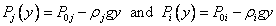
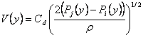
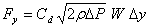
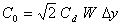
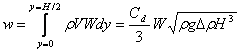
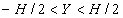
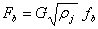

幂律模型和二次模型一次只允许流向一个方向。通过大开口（例如门口）的流动往往更加复杂，开口的不同部分可能会出现相反方向的流动。两个房间之间的温度和由此产生的密度差异可能意味着烟囱效应导致门口顶部产生正压差，底部产生负压差（反之亦然），从而允许开口中的双向流动。通过门口的传热研究总结在[ 巴拉卡特 1987 ]。大多数研究都试图开发以下形式的无量纲相关性（使用努塞尔特数、普兰德数和格拉肖夫数）
|
|
(63) |
哪里 b 大约为 0.5 并且 C 介于 0.22 和 0.33 之间，具体取决于用于相关的温差。已经表明，这种传热相当于气流，可以通过将总开口划分为具有相同总面积但配置为适当地考虑开口中不同高度处的气流的大小和方向的几个较小开口，通过幂律元素来建模。
另一种方法是创建一个单一的气流元件来解释整个开口的流动。 [中给出了一个简单的理论，用于估计通过垂直隔断中的大开口的烟囱引起的气流。 布朗和索尔瓦森 1962 ]。这种门口模型往往比多重开口方法更快。然而，它也使雅可比矩阵的组装过程变得复杂，因为可能存在一个或两个流。更重要的是，门口单元模型的开发需要了解节点模型中使用的垂直温度分布（此处假设为常数），以便计算作为开口高度函数的压差。这一要求损害了气流网络程序模块化的独立性。
假设每个房间的空气密度恒定，则使用流体静力方程来关联每个房间不同高度处的压力：

|
(64) |
|
 |
(65) |
哪里
P0j, P0i
y = 0 时 j 区和 i 区的压力，开口的参考标高，
rj, ri
j 区和 i 区的空气密度，
Pj, Pi
j 区和 i 区的参考压力，
hj, hi
j 区和 i 区的参考高程，以及
h0
开口中心的标高。
根据 [Brown 和 Solvason 1962]，假设气流速度是高度的函数，由孔口方程给出：
|
 |
(66) |
哪里
Cd = 流量系数，以及
r = 通过开口的空气密度。
开幕式， H 高由 W 宽，可以分为多个开口，每个开口代表一条细水平条 Dy 高和 W 宽。通过每个条带的质量流量为
|
 |
(67) |
每个子开口的幂律模型 (20) 的系数由下式给出
|
 |
(68) |
可以通过考虑两个房间之间的开口来构建近似模型，这两个房间没有通向任何其他房间的流动路径。那么每个方向的流量必须相等并且 P0j = P0i 。对方程 (66) 进行积分 y =0 至 y=H /2 使用 (65) 计算 DP 给出通过开口上半部分的流量。
|
 |
(69) |
这相当于一个简单的幂律模型

|
(70) |
（一个简单的孔口，总开口面积的一半）放置在高程 y = 2H /9。两个开口模型以相同的开口完成 y = -2H /9 高度允许相反方向的相等流量。由于孔口是用简单的孔口开口建模的，因此由于其他力而导致的房间之间的任何额外压降都包含在两个开口模型中。当中性面偏离开口中心时，模型的精确度会降低。
第三种方法是创建单个气流元件来解释整个开口上的气流。首先定义中性高度， Y ，其中空气速度为零。根据等式（66），这必须发生在 Pj(y) = Pi(y ）。根据方程 (65)，这必须是

|
(71) |
如果 | Y| < H /2，有双向气流通过开口。如果 rj = ri ，中性高度无法计算，但是，由于不存在双向流动的可能性，因此该开口可以被认为是简单的孔口开口。
定义 Drºrj - ri 和变换后的高度坐标 z º y - Y 。然后开口处的压力差由下式给出

|
(72) |
通过中性高度上方开口的质量流量由下式给出

|
(73) |
和中性高度以下的质量流量

|
(74) |
下标m应该是j还是i取决于流向。方程 (73) 和 (74) 的积分给出了气流的几种不同的解，具体取决于 Y 和标志 Dr 。定义：

|
(75) |
给出以下流量方程。
| 案例 | Dr < 0 | Dr < 0 | |
 |
 |
 |
(76) |
 |
|
|
(77) |
|  |
 |
 |
(78) |
|  |
 |
(79) |